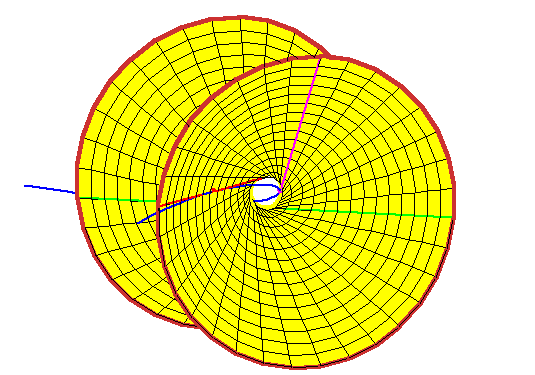

Hyperboloid Through the Three Tangent Lines
Hyperboloid Through the Three Tangent Lines
The lines meeting these three lines form a ruling of the quadric (here a hyperboloid
of one sheet) through the three lines.
Each intersection of this hyperboloid with a fourth line gives a line meeting
all four.
In this geometric context, the Shapiro conjecture is
equivalent to the following geometric statement:
Any line tangent to the rational normal curve at a real point meets the
hyperboloid in two real points.
It is not hard to believe this, as the rational normal curve loops around
inside the hyperboloid.
